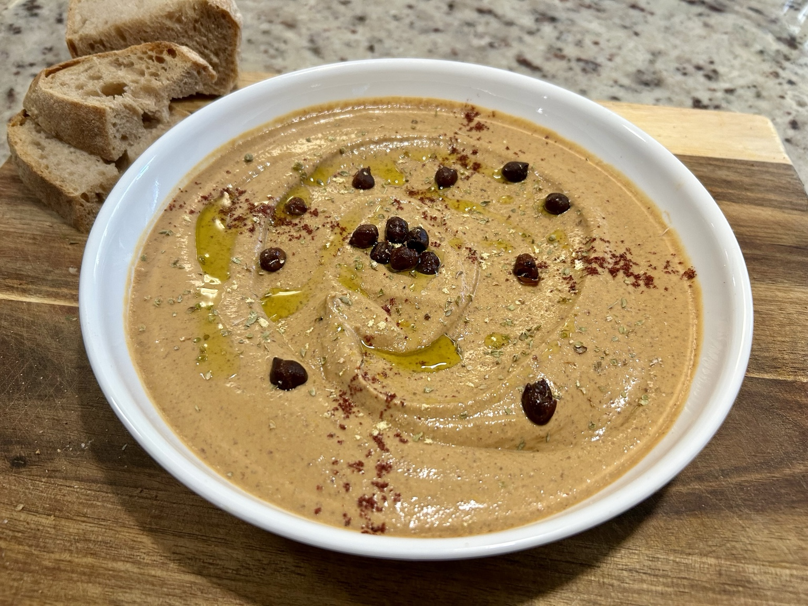

Side
Kala Chana Hummus
A darker, earthier hummus built around black chickpeas, with saffron water, tahini, cumin, and just enough lemon for a lift.

Ingredients
- 250g cooked kala chana (black chickpeas), about 1.5 cups
- 1 tbsp tahini
- Fresh lemon juice, to taste (about half a lemon)
- 1 garlic clove
- 1/2 tsp ground cumin
- Salt, to taste (about 1 tsp)
- 2–3 ice cubes
- Saffron water: about 10 saffron threads bloomed in 1 tbsp of hot water
Method
- Steep the saffron threads in the hot water for a few minutes.
- Blend the cooked kala chana first until broken down, scraping the bowl as needed.
- Add the tahini, lemon juice, garlic, cumin, salt, onion juice, and saffron water.
- Add the ice cubes and continue blending until completely smooth and creamy. Add a little cold water only if needed.
- Taste and adjust lemon, salt, and cumin before serving.
Serving
Spread into a shallow bowl and finish with a small drizzle of olive oil, sumac, dried herbs, or a few whole kala chana.
Notes
This has a noticeably deeper flavour than classic chickpea hummus. The saffron water gives it a subtle aromatic lift, while the lemon juice adds a zesty fresh sharpness.